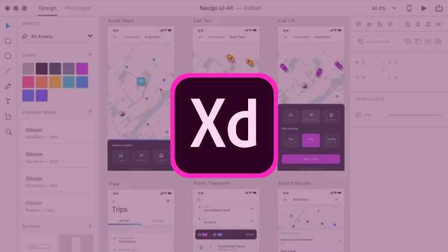

Which UX tool should I use?
There are many UX and UI tools out there. And there are probably an equal amount of guides, articles and charts comparing them. Which one should you pick? While these tools may overlap their features and capabilities, some are lacking in certain areas. That is why, dear reader, I will attempt to highlight the strengths and weaknesses of some of the most popular applications so you can make the right choice for the design task at hand.
I’ve broken down the selections by domain strength, with what I feel is the best choice for each. I understand that you might be limited as to the tools you can use depending on your organization, budget, team dynamics, operating system, etc. - so each pick will have some alternative choices that will hopefully suffice.
Wireframing
First and foremost, you need a tool that can wireframe. All of these UX apps can do it, but which one really excels and lets you quickly capture ideas that can be conveyed to peers and colleagues.

My Pick: Adobe XD
A recent addition to Adobe’s roster, XD has a lot of ground to make up. The first thing I noticed with XD was how spartan and clean the UI was compared to other Adobe products, Premiere it is not. Wireframing is a breeze with XD. You can quickly knock together UIs using some nifty layout tools like Repeat Grid that make what used to be tedious (repetitive copying and pasting, nudging, distributing, aligning). Symbols (called Components in XD) are easy to create and manage, and there are some powerful prototyping abilities in there as well. It even supports voice interactions! If you already have a creative cloud subscription, it’s worth checking out. It may surprise you.
- Excels: Wireframing
- Good: Prototyping, Collaboration
- Needs improvement: Drawing
- Keep in mind: Subscription, Adobe Creative Cloud, Limited free version
- Alternative: Axure or Balsamiq.
Drawing
Do you need to create icons, edit SVGs, make a new company logo? Some very powerful and popular UX design tools (cough Axure cough Adobe XD) can’t do much at all in the area of creating new assets. So, which ones are good at it?
My Pick: Sketch
Not so good for sketching in the traditional sense, but it’s a decently powerful vector design app with a solid set of tools. It can even do some limited raster (pixel) editing, and has some very good export options. Complex illustrations might require a more powerful tool like Adobe Illustrator or Affinity Designer, but compared to other UX/UI tools out there, sketch stands above the rest for drawing capability and export options.
- Excels: Drawing, Plugins, Community
- Good: Collaboration
- Needs improvement: Prototyping
- Keep in mind: Sketch is Mac only
- Alternative: Figma. Figma has some very nice vector tools and the UI is pretty similar to sketch, so users should be right at home. It’s browser based so there are some performance considerations, but has offline versions for Mac and Windows. It’s also very easy to try out.
Prototyping
My Pick: Axure
If you need complex prototyping and interactions, Axure is the way to go. While it can get daunting at times, no other program I’ve found has the capabilities and general ease-of-use of Axure. Fully functional text fields, form, lightboxes, animation and more. You can pass variables between pages to create some very impressive effects. It can’t draw as well as Sketch or collaborate as well as Figma, but when I need to convey an intricate interaction or create a very realistic approximation of real working software, Axure is the best pick for the job.
- Excels: Prototyping, Wireframing
- Good: Collaboration
- Needs improvement: Drawing, Responsive design, Exporting
- Keep in mind: Creating complex interactions sometimes can get, well… complex. Also, it can’t export images of your designs, everything is viewed in the browser.
- Alternative: iRise. iRise feels similar to Axure, like bizzarro Axure even. It has many of the prototyping features of Axure, is web based (though there is a somewhat dated desktop version), but it’s pretty pricey compared to other ux/ui tools.
Collaboration
There’s no getting around it. You’re going to have to work with other people at some point. Share assets with teammates, pick up a project that someone else started, swarm on a big project, share and present ideas to your boss, or his boss, or the leadership, things like that. What app makes this a little easier?
My Pick: Figma
Figma feels like it was built from the ground up to enable collaboration. Since it is web based, projects are immediately saved and can easily be made accessible to teammates and co-workers. With real-time collaboration, multiple designers can work on the same design in real time without the fear of working from old versions or overwriting files. Using Figma to create a design system is a breath of fresh air. Components can be easily updated across older designs. It’s pretty impressive when you start to use it to its full potential. It also has great drawing tools. If prototyping and performance would improve just a bit, it would be the perfect tool.
- Excels: Collaboration, Drawing
- Good: Prototyping, Wireframing
- Needs improvement: Performance
- Keep in mind: Figma is web based, so I’ve noticed some performance issues. There is an electron based desktop version that can still get laggy at times.
- Alternative: Sketch. There’s a lot of options for collaboration with Sketch: native Sketch for Teams or any number of plugins: Abstract, Craft by InVision, Zeroheight, Kaktus, the list goes on.
Animation & Motion Design
I don’t really use much animation in my designs, other than basic sliding and fading. Most UX tools have some basic animation and transitioning between screens and states, but it ends there. What if you need to do some serious motion design involving multiple elements moving and scaling in a beautiful synchronized UI dance?
My Pick: Invision Studio
Invision stands apart from other UX and UI tools by having a robust animation capability. It features a collection of built-in animations and transitions that cover the standard things you’d see in modern apps and the web. If you need to fine tune or create something from scratch, there’s a complete timeline editor available similar to Premiere Pro. Invision Studio is a pretty great tool even apart from its animation features, it might become your primary UX/UI design tool.
- Alternative: Framer. Or is it Framer X? Or Framer Web? I haven’t used this tool, but have kept an eye on it over the years. I think it used to be a javascript library? And now there’s also a React motion library by Framer. Either way, it seems like it can do slick UI animation. Might be worth checking out if Invision Studio doesn’t work for you.
Ease of Entry
I get asked often by UXers, “what wireframing tool should I use?” They could be developers, product managers, graphic designers. My old go-to answer used to be to just stick with pencil & paper, since the barrier to entry and learning curve was too steep. Plus I don’t really want to get into all the capabilities, pros and cons, cost… (which leads to the follow up question “Oh, is there a free one?”). But that’s why I wrote this article. Stop asking me.
My Pick: Balsamiq
It’s great. Signup and start wireframing. It’s easy to start, the assets and symbols are right there, the UI is familiar and easy easy easy. Yet it’s powerful enough to use for even the most seasoned UX veteran.
- Excels: Wireframing
- Good: Wireframing
- Needs improvement: I mean, it really just does wireframing. That’s it’s focus, and it’s good at it.
- Keep in mind: The wireframes it produces have a sketchy black & white look, to focus on layout and content.
- Alternative: draw.io is free and open source, and even built into some tools like Atlassian Confluence. If you need a low barrier of entry, draw.io is hard to beat. And you can produce some pretty good wireframes with it, too.
Extra Credit: Flow Charts and Diagrams
My Pick: Axure
This isn’t as complete a section as the others, but I want to mention it. As a Product Designer I find myself needing to create site maps and flowcharts quite a bit. Axure and draw.io perform quite well with linking nodes, smart arrows, etc. that are essential to creating flow charts that other design tools don’t have build in.
Conclusion
Well, that’s my thoughts on the strengths of these apps. If you want a thorough breakdown of the features and capabilities of the top 18 UX tools check out uxtools.co. By the way, I personally use Figma and Axure daily, and have used all the tools on this list at some point in my career. And of course there’s ol’ trusty photoshop for the heavy graphic stuff- although I did just get the demo for Affinity Designer, which I used to make the graphics for this article. There’s always something new to try out.